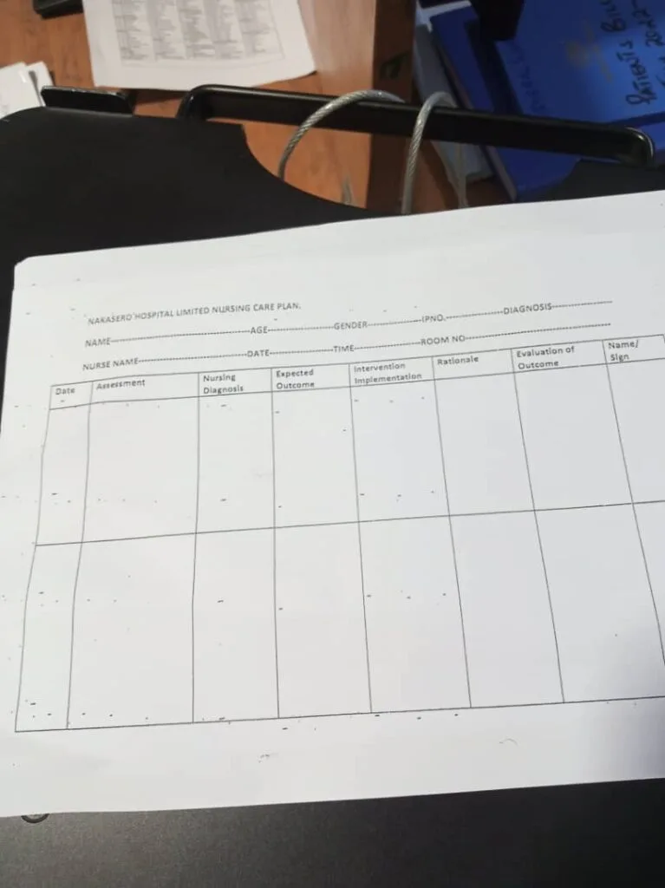
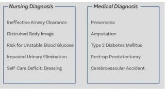

Expanded Nursing Uganda Explanation
Nursing process should be understood beyond a short definition. Link the concept to patient history, focused assessment, common risks, nursing priorities, documentation and evaluation of outcomes.
Contents, 26 sections (tap to expand)
01 Overview
The Nursing process is an organized, systematic, dynamic method of giving individualized nursing care that focuses on identifying and treating unique responses of individuals or groups, to actual or potential alterations in health. (Nursing procedure Manual, 2015)
OR:
The nursing process is defined as a systematic , rational method of planning that guides all nursing actions in delivering holistic and patient-focused care.
02 Outline the CHARACTERISTICS of the nursing process
- Cyclic and Dynamic: It is an ongoing continuous process throughout the stages of illness and treatment and ends with the cease of the illness.
- Goal directed and Client oriented: The nursing process is intended to treat the patient and is in the best interest of the patient.
- Interpersonal and Collaborative: This goes to explain the amount of interaction that might be necessary between nurses, patients of similar illnesses and the medical team.
- Universally applicable: This process is universally standard and no matter what the institution it may be, the process remains the same.
- Scientific and Systematic: Every symptom or sign is a result of a scientific fact which leads to scientific methods of treatment and follow-ups. It is systematic and goes from step to step as in the phases mentioned below.
- Requires critical thinking: The use of the nursing process requires critical thinking which is a vital skill required for nurses in identifying client problems and implementing interventions to promote effective care outcomes.
03 Explain the components of the nursing process
- Assessment
- Diagnosis
- Planning
- Implementation
- Evaluation
04 ASSESSMENT PHASE
The first phase of the nursing process is assessment . It involves collecting, organizing, validating, and documenting the clients’ health status. Assessment involves data collection which is the process of gathering information regarding a client’s health status. The main methods used to collect data are health interviews and physical examination.
05 Types of data collected
- Subjective data or symptoms: This is information obtained from the patient through an interview. It also includes symptoms felt by the patient only. It is only the patient who can tell you information e.g. present complaints, past medical history, past surgical history etc.
06 NURSING DIAGNOSIS PHASE
A nursing diagnosis is a clinical judgment concerning a human response to health conditions/life processes, or a vulnerability to that response, by an individual, family, group, or community.
07 Differences between Nursing Diagnosis and Medical Diagnosis
- Focus: Nursing diagnosis centers on the patient's holistic response to actual or potential health problems, encompassing physical, emotional, social, and spiritual aspects. Medical diagnosis, conversely, identifies and labels diseases, injuries, or conditions based on their etiology and pathology.
- Scope: Nursing diagnoses provide a framework for nursing care and interventions, guiding nurses in developing individualized care plans. Medical diagnoses, on the other hand, guide medical treatment and interventions, often involving pharmacological or surgical approaches.
- Orientation: Nursing diagnoses are patient-oriented and dynamic, changing as the patient's responses evolve. Medical diagnoses are disease-oriented and tend to be more static, remaining the same as long as the disease is present.
- Nomenclature: Nursing diagnoses use standardized terminology developed by organizations like NANDA International (e.g., "Acute Pain," "Impaired Skin Integrity"). Medical diagnoses use standard medical classifications such as ICD-10 (e.g., "Appendicitis," "Type 2 Diabetes Mellitus").
08 1. Actual nursing diagnosis
- These are presenting response to current health condition.
- The actual nursing diagnosis has three parts i.e. Diagnosis , relation to (pathophysiology) and evidence .
Scenario A: A patient complaining of fevers, on thermometer reading it indicates 38°C. From NANDA 2024 – 2026 fevers have hyperthermia i.e. Hyperthermia related to increased leukocyte activity evidenced by the thermometer reading of 38°C.
Scenario B: A patient complained of headache of the forehead since the last 2 days after a minor head injury following a fight. On examination the pain was at 3 on a 0 – 5 pain scale. From NANDA 2024 – 2026 headache is described as Acute pain since it has been present less than 3 months. - Acute pain related to trauma to the head evidenced by the patient’s verbalization of feeling headache of 3 on a 0 – 5 pain scale.
09 2. Potential Nursing diagnosis:
- This is an issue that could occur incase the current symptoms is not properly managed.
- The potential nursing diagnosis has two parts that is the nursing diagnosis and the relation (pathophysiology) only.
Scenario: A patient reported vomiting for 1 day after ingesting chips and chicken. On examination the patient had no signs of dehydration. From NANDA 2024 – 2026 vomiting does not have an actual nursing diagnosis it only has a potential nursing diagnosis which is risk for inadequate fluid volume . – Risk for inadequate fluid volume related to vomiting.
10 PLANNING PHASE
The planning stage is where goals and outcomes are formulated that directly impact patient care. Planning phase is divided into:
- Goals
- Expected outcomes
11 Goals
- These are the aims of the nursing interventions to be provided.
- Therefore they should be smart.
Goals should be:
- Specific or on point
- Measurable or Meaningful
- Attainable or Action-Oriented
- Realistic: it should represent things in a way that is accurate and true to life
- Timely or Time-Oriented
Goals are divided into 3 categories i.e.
- Short term goals: these are goals having time limit ranging from minutes to 5 days.
- Intermediate goals: these are goals having time limit ranging from 5 days to 30 days.
- Long term goals: these are goals having time limit ranging from 30 days to years.
12 Expected Outcome
This what a nurse expects the patient to present after provision of the nursing interventions. Its divided into 2 i.e. short term and long term outcomes.
- No. Short term goal Expected outcome
- 1. To reduce the patient's temperature to between 36.0° C to 37.4°C within 30 minutes. The patient will verbalize that he nologer feels feverish. Thermometer reading will be between 36.0° C to 37.4°C.
- No. Intermediate term goal Expected outcome
- 1. To relieve patient from fevers within the 72 hours. The patient will verbalize that he feels no fevers after the discontinuation of anti-pyretics. Thermometer reading will be between 36.0° C to 37.4°C.
13 IMPLEMENTATION PHASE
The implementation phase of the nursing process is when the nurse puts the treatment plan into effect. It involves action or doing and the actual carrying out of nursing interventions outlined in the plan of care.
The implementation phase is divided into two parts:
- Nursing Interventions
- Rationale
14 Nursing Interventions
Nursing interventions are specific actions or treatments that nurses perform to help patients achieve the outcomes identified in the care plan. These interventions are based on scientific knowledge, clinical judgment, and the nurse's skills. They are designed to:
- Promote health and prevent illness.
- Restore health and facilitate recovery.
- Alleviate suffering and provide comfort.
- Assist with coping and adaptation to health problems.
Nursing interventions can be categorized in various ways, such as:
- Direct Care Interventions: These are actions performed directly with the patient, such as administering medications, performing wound care, assisting with activities of daily living, or providing emotional support.
- Indirect Care Interventions: These are actions performed away from the patient but on their behalf, such as documenting care, collaborating with other healthcare professionals, managing the patient's environment, or advocating for the patient's needs.
- Independent Nursing Interventions: These are actions that nurses can initiate and perform on their own, based on their scope of practice and clinical judgment, without a physician's order (e.g., providing health education, repositioning a patient to prevent pressure ulcers).
- Dependent Nursing Interventions: These are actions that require a physician's order or supervision (e.g., administering prescription medications, initiating intravenous fluids).
- Collaborative Interventions: These are actions that nurses carry out in collaboration with other healthcare team members, such as physical therapists, dietitians, or social workers.
15 Rationale
The rationale in the implementation phase refers to the scientific reason or justification behind each nursing intervention. It explains *why* a particular intervention is chosen and *how* it is expected to achieve the desired patient outcomes. Providing a clear rationale for interventions is crucial for several reasons:
- Evidence-Based Practice: It ensures that nursing care is based on current best evidence and research, rather than tradition or guesswork.
- Critical Thinking: It promotes critical thinking by requiring nurses to understand the underlying principles and expected effects of their actions.
- Accountability: It provides a basis for accountability, as nurses can explain and justify their interventions to patients, families, and other healthcare professionals.
- Learning and Education: It serves as an educational tool for nursing students and less experienced nurses, helping them understand the principles of effective nursing care.
- Patient Safety: Understanding the rationale helps nurses to identify potential risks and complications associated with interventions and to take appropriate precautions.
When documenting nursing interventions, it is often best practice to include a concise rationale, either explicitly or implicitly through the choice of evidence-based actions, to demonstrate the thoughtful and purposeful nature of nursing care.
- Interventions Rationale
- Provision of tepid sponging to allow evaporative cooling
- Loosen or remove excess clothing and covers. Exposing skin to room air decreases heat and increases evaporative cooling.
- Provide a tepid bath or sponge bath. A tepid sponge bath is a non-pharmacological measure to allow evaporative cooling. Do not use alcohol as it can cool the skin rapidly and may cause shivering.
- Apply ice packs to the patient covered in the towels i.e. by placing ice packs in the groin area, axillae, neck, and torso however when the patient’s core temperature is lowered to 39°C, it is necessary to remove the ice packs from the patient to avoid overcooling which can result in hypothermia. To effectively cool the core temperature.
- Monitor the skin during the cooling process. To prevent damage to the skin which might occur due to prolonged exposure.
- Raise the side rails and lower the bed at all times. To ensure the patient’s safety even without the presence of seizure activity.
- Administration of prescribed drugs 1. Antipyretics 2. Anti-seizure drugs 3. Antibiotics or anti-malarial To eliminate the cause of fevers
- Keep clothing and bed linens dry. To promote comfort and helps prevent chilling since diaphoresis occurs during defervescence.
16 EVALUATION
Evaluating is the fifth step of the nursing process. This final phase of the nursing process is vital to a positive patient outcome. Once all nursing intervention actions have taken place, the team now learns what works and what doesn’t by evaluating what was done beforehand. This is the past tense of the outcome if they have been achieved.
- Outcome
- Short term outcome Patient verbalized that he no longer feels fevers of anti pyretics the end of 30minutes Thermometer reading was 36.7 C after 30 minutes
- Inter-mediate outcome Patient verbalized that his fevers were relieved after 72 hours following discontinuation of anti-pyretics Thermometer reading was 36.7 C after 72 hours following discontinuation of anti-pyretics
17 Explain the importance of using a nursing process
- The nursing process allows the nurse to provide effective care by prioritizing meaningful interventions based on their assessments and clinical diagnosis of the patient.
- At the end of the nursing process, the nurse evaluates the success of their care to ensure that effective care is being prioritized.
- It creates a standard of care where the nurse develops a nursing diagnosis and care plan based on their assessment of the patient.
- The nursing process provides care that is centered around the individual patient which reduces the time the client spends in the health care facility, and optimizes their health by minimizing complications in care.
- By setting defined goals with a clear timeline in the nursing process, the nurse can evaluate the effectiveness of the care they are providing and make changes to the care plan as needed.
18 SO IN BRIEF
Assessment:
- Subjective Data (Symptoms): Patient complaining of fevers.
Diagnosis:
- Actual Nursing Diagnosis: Hyperthermia related to increased leukocyte activity evidenced by the thermometer reading of 38°C.
- Potential Nursing Diagnosis: Risk for fluid volume deficit related to vomiting.
Planning (Goals/Expected Outcomes): Goals:
- Short Term: Reduce temperature to between 36.0°C to 37.4°C within 30 minutes.
- Intermediate Term: [Specify a goal if needed]
- Long Term: [Specify a goal if needed]
Expected Outcomes: The patient will verbalize that he no longer feels feverish. Thermometer reading will be between 36.0°C to 37.4°C.
Implementation:
- [Specify nursing interventions here, e.g., tepid sponging.]
Rationale:
- [Explain why you did the intervention, e.g., To allow evaporative cooling.]
Evaluation:
- Patient verbalized that he no longer feels feverish, and the thermometer reading was 36.7 degrees Celsius after 30 minutes
19 Sample Nursing Care Plan for a patient with Malaria
- Assessment Diagnosis Planning (Goals or Expected Outcomes) Implementation/ Interventions Rationale Evaluation
- Fever Hyperthermia related to leucocyte activity as evidenced by an elevated temperature of 39° C. Reduce fever to 37° C within 30 minutes. Administer antipyretic medication as prescribed. Encourage adequate fluid intake. Apply cooling measures (e.g., tepid sponging). Antipyretic medication helps lower the fever. Adequate fluid intake prevents dehydration. Cooling measures aid in reducing body temperature. Fever reduced to 37° C
- Headache Acute Pain related to malarial infection evidenced by patient verbalizing headache. Alleviate headache within 40 minutes. Administer analgesic medication as prescribed. Provide a quiet and dimly lit environment. Encourage relaxation techniques (e.g., deep breathing). Analgesic medication helps relieve pain. A quiet environment reduces stimuli that may exacerbate the headache. Relaxation techniques promote comfort. Headache Alleviated within 40 minutes. With a pain scale reading of 1/10.
- Myalgias Impaired Physical Mobility related to muscle pain and weakness as evidenced by difficulty in movement. Improve mobility and reduce muscle pain within 5 days. Encourage gentle stretching exercises. Administer analgesic medication as prescribed. Provide warm compresses to affected areas. Gentle stretching improves flexibility and reduces muscle pain Analgesic medication helps relieve pain. Warm compresses promote muscle relaxation. Improved mobility and reduced muscle pain After 5 days.
- Nausea Nausea related to changes in eating habits as evidenced by patient complaints and increased salivation Alleviate nausea within 1 hour. Administer antiemetic medication as prescribed. Encourage small, frequent meals. Provide oral hygiene measures after vomiting episodes. Antiemetic medication helps alleviate nausea. Small, frequent meals are easier to tolerate. Oral hygiene measures prevent discomfort and promote a sense of well-being. Patient verbalised That no nausea After 1 hour.
- Vomiting Risk for inadequate fluid volume related to unpleasant sensory stimuli The client will report decreased severity or elimination of nausea and vomiting. Administer antiemetic medication as prescribed. Monitor and record intake and output. Provide oral rehydration solutions as needed. Antiemetic medication helps control vomiting. Monitoring intake and output prevents dehydration. Oral rehydration solutions restore fluid balance. The client reported elimination of nausea and vomiting.
- Diarrhea Risk for inadequate Nutritional intake related to less food intake as evidenced by watery stool. Achieve optimal nutritional intake. Administer antidiarrheal medication as prescribed. Encourage a bland and easily digestible diet. Monitor and record bowel movements. Antidiarrheal medication helps control diarrhea. A bland diet is easier on the digestive system. Monitoring bowel movements informs about the effectiveness of interventions. Achieved optimal nutritional intake
- Dehydration Risk for impaired fluid volume balance related to diarrhea, nausea and vomiting. Patient will maintain hydration as evidenced by adequate intake and output, vital signs, and skin turgor Administer fluids intravenously as indicated. Offer high-water content foods like soups Administer antiemetics as indicated. Fluids for fluid replacement To encourage rehydration and motility of the bowel. To reduce vomiting episodes Patient maintained hydration.
Expected outcomes while managing a patient with glomerulonephritis: Came as a Question in 2023
20 Defining Expected Outcomes
Expected outcomes, also known as patient outcomes or desired outcomes, are measurable, observable, and achievable goals that a patient is expected to attain as a result of nursing care. They represent the desired changes in a patient's health status, behaviors, or perceptions. Expected outcomes are crucial components of the planning phase of the nursing process, as they provide a benchmark against which the effectiveness of nursing interventions can be evaluated.
21 Tense Used in Expected Outcomes
Expected outcomes are always written in the future tense . This is because they describe what the patient will do or will achieve after the nursing interventions have been implemented. The future tense emphasizes that these are goals to be reached, rather than current states. Examples include phrases like "patient will demonstrate," "patient will exhibit," "patient will regain," or "patient will verbalize."
- Patients will demonstrate bowel sounds within normal limits.
- Patients will exhibit normal eating habits without experiencing nausea, vomiting, abdominal discomfort, dyspepsia, bloating, and early satiety.
- Patient will exhibit balanced nutrition as evidenced by the absence of malnutrition
- Patient will regain and maintain adequate body weight for age and gender
- Patient will verbalize two strategies to reduce nausea and improve comfort.
- Patient will express improved comfort as evidenced by improved sleep and mood.
- Patient will verbalize relief from nausea
- Patient will be able to demonstrate strategies that prevent nausea
- Patient will maintain hydration as evidenced by adequate intake and output, vital signs, and skin turgor
22 Summary NANDA
Expected outcomes:
- Patients will demonstrate bowel sounds within normal limits.
- Patients will exhibit normal eating habits without experiencing nausea, vomiting, abdominal discomfort, dyspepsia, bloating, and early satiety.
- Patient will exhibit balanced nutrition as evidenced by the absence of malnutrition
- Patient will regain and maintain adequate body weight for age and gender
- Patient will verbalize two strategies to reduce nausea and improve comfort.
- Patient will express improved comfort as evidenced by improved sleep and mood.
- Patient will verbalize relief from nausea
- Patient will be able to demonstrate strategies that prevent nausea
- Patient will maintain hydration as evidenced by adequate intake and output, vital signs, and skin turgor
23 Nursing Uganda Clinical Lens
Use Nursing Process as a practical nursing topic, not only a memorized definition. Turn the topic into practical nursing knowledge: meaning, assessment, care priorities, teaching and evaluation.
- What to understand first: define nursing process, identify the normal or expected pattern, then explain what changes when the patient is unwell.
- Why it matters in care: the nurse must recognize risk early, explain findings clearly, document accurately and know when to escalate.
- How to revise it: connect each point to assessment, nursing diagnosis or care problem, intervention, rationale and evaluation.
24 Assessment Guide
- Key definitions, patient history, focused observations and risk factors.
- Findings that are normal, abnormal or urgent.
- Resources, referral needs and documentation requirements.
25 Nursing Priorities, Rationales and Outcomes
- Protect safety, comfort, dignity and infection prevention.
- Provide clear care, education and escalation when needed.
- Evaluate response and record what changed.
The rationale for these priorities is patient safety: nursing actions should prevent deterioration, reduce discomfort, support recovery and create clear evidence for the next caregiver.
- Expected outcome: The topic is understood in a way that supports safe nursing judgement and revision.
26 Patient Teaching and Revision Check
- Explain nursing process in simple language the patient or caregiver can repeat back.
- Teach warning signs, medicine or follow-up instructions, hygiene or lifestyle points where relevant.
- For exams, prepare a short answer using: definition, causes or risk factors, signs, assessment, management, complications and prevention.
- For ward practice, document baseline findings, actions taken, patient response and the plan for review.
Illustrations and Diagrams (48)




40 more diagrams available, open the lesson for full illustrations.
Related Video Lectures
Watch nursing lecture videos on YouTube for this topic. Opens in a new tab.
Watch on YouTubeExternal link: YouTube may use its own cookies and terms. Nursing Uganda is not affiliated with YouTube.